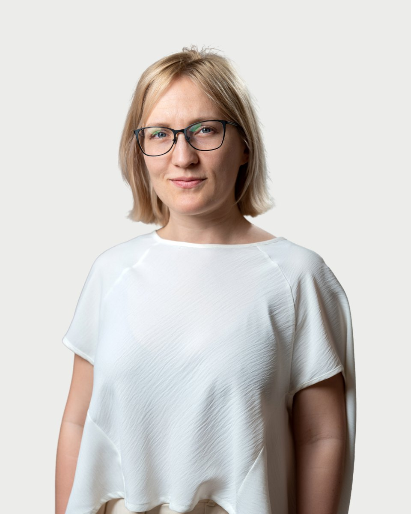

Regiszter 26 · Klinikai szakpszichológus
Nádas
Beáta

Amiben segítek
- Életvezetési tanácsadás
- Stresszkezelés, munkahelyi- és teljesítmény problémák
- Depresszió
- Szorongásos zavarok (fóbiák és pánikbetegség)
- Konfliktuskezelés
- Életkezdési kihívások, pályaorientáció
- Kiégés, motivációvesztés, kiüresedettség érzés
- Krízisintervenció
A legfurcsább paradoxon, hogy amikor elfogadom magam olyannak, amilyen vagyok, azután tudok változni." (Carl Rogers)
Rólam
Szakmai utam a vállalati környezetből vezetett az egészségügy felé, ahol eleinte az emberi erőforrás menedzsment terén, illetve egyéni- és szervezetfejlesztésben dolgoztam munka- és szervezet szakpszichológusként. Idővel az egyén szintje keltette fel az érdeklődésemet, hogy átfogóbban megérthessem klienseim személyes helyzetét, és ezáltal egy másik szinten tudjak nekik segíteni.
A közös munka során a kliensemet mindvégig egy olyan személynek tekintem, aki elkötelezetten küzd a saját kiteljesedése, boldogulása érdekében. Arra törekszem, hogy egy autentikus facilitátorként vegyek részt a segítés folyamatában, ahol a másik ember fejlődési útjának a tanúja lehetek. A terápiás munka számomra egy megtisztelő helyzet, ahol egy őszinte és gyógyító kapcsolódás jön létre a beszélgetőpartner és köztem, és ahol a másik személyt elkísérhetem egy szakaszon, azon a bizakodással teli lelki úton, amit az élete jobbításáért választott bejárni.
Nádas Beáta díja 18-25 ezer forint alkalmanként.
Képzés és szakmai út
A képzések és a szupervízió az akkreditált szakképzőhely rendjében folynak. Mit jelent ez Önnek
Végzettség
• Klinikai- és mentálhigiéniai szakpszichológus jelölt, Semmelweis Egyetem (2021- 2025.)
• Önkéntes telefonos ügyelő Magyar Lelki Elsősegély Telefonszolgálat, (2021.)
• Üzleti és vezetői coaching pszichológus, Magyar Coaching Pszichológiai Egyesület, (2019.)
• Munka- és szervezet szakpszichológus, Budapesti Műszaki Egyetem, (2017-2019.)
• Angol-magyar pszichológiai szakfordító, Debreceni Egyetem, (2013-2015.)
• Pszichológus MA, Munka- és szervezetpszichológia, Debreceni Egyetem, (2013-2015.)
Külföldi ösztöndíjak
• Erasmus Plus, Leiden University (Hollandia) 2014/2015 tavaszi félév
• Campus Hungary, Århus Summer University (Dánia) 2014. nyár
• Dán állami ösztöndíj, Odder Højskole (Dánia) 2011/2012. tavaszi félév
• Atlantis Program, University of Charleston (USA) 2011/2012 őszi félév
Munkahely és tapasztalatok
• Pszichológus Budapest Pszichológia, Pszichológiai és Pszichoterápiás Központ, 2022. Február, Július
• Pszichológus Pszichokikötő, Veresegyház, (2021. November, 2022. Június)
• Pszichológus Békéscsabai Egészségügyi Alapellátási Intézmény (BEAI) Pszichológiai Tanácsadó és Mentálhigiénés Gondozó, (2020. November, )
• Pszichológus Asklepios Alapítvány a Pszichés Egészségért, (2021. Július, december)
• Munka- és Szervezet szakpszichológus, coaching pszichológus Balansz Egészségfejlesztő Központ, (2020. Január, 2021. Július)
Időpont Nádas Beátanál
Az ügyfélszolgálat hétköznap 9 és 15 óra között egyeztet. Ha bizonytalan, hogy Ön kihez tartozik, azt is megbeszéljük.
Hasonló területen dolgoznak
Három kolléga, akinek a szakterülete a legközelebb áll Nádas Beáta munkájához.